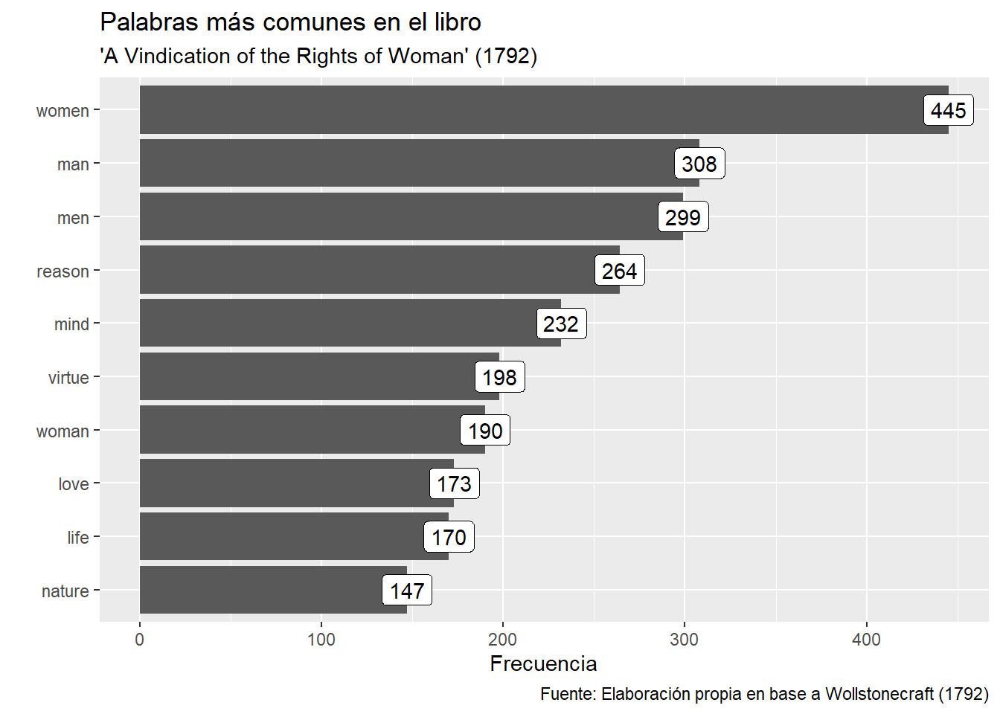

06A - Análisis de texto
Si quieres correr estos scripts localmente, acá puedes descargar el proyecto comprimido en .zip. Paquetes que necesitas tener instalados antes de comenzar con el proyecto (06A, 06B, 06C):
tidyverse,tidytext,stopwords,gutenbergr.
Inicio: cargar paquetes, base de datos
library(tidyverse)
# install.packages("tidytext")
# install.packages("stopwords")
library(tidytext)
library(SnowballC) # se instala solo con tidytext
library(stopwords)Hoy trabajaremos con el texto de tres libros clásicos de teoría política: “Leviathan” de Hobbes (1651), “A Vindication of the Rights of Woman” de Mary Wollstonecraft (1792) y “On Liberty” de John Stuart Mill (1859). Como son libros antiguos, ya son parte del dominio público y se pueden descargar desde Project Gutenberg. Hay un paquete de R que ayuda a hacer esto automáticamente: pueden ver cómo descargué los libros y edité ligeramente las bases en el script 06c de este proyecto. Carguemos las bases:
## Parsed with column specification:
## cols(
## author = col_character(),
## book = col_character(),
## gutenberg_id = col_double(),
## chapter = col_double(),
## line = col_double(),
## text = col_character()
## )## Parsed with column specification:
## cols(
## author = col_character(),
## book = col_character(),
## gutenberg_id = col_double(),
## chapter = col_double(),
## line = col_double(),
## text = col_character()
## )## Parsed with column specification:
## cols(
## author = col_character(),
## book = col_character(),
## gutenberg_id = col_double(),
## chapter = col_double(),
## line = col_double(),
## text = col_character()
## )Vamos a comenzar trabajando con “Leviathan” y “A Vindication of the Rights of Woman”, dejando “On Liberty” para algunos ejercicios.
Tokens y frecuencias
La unidad de análisis de estas bases de datos es la línea de texto. Esto es bastante común en los cuerpos de texto que provienen de libros / recursos impresos (la mayoría). Es probable que sea igual en, por ejemplo, programas de candidaturas políticas.
Lo más común en análisis de texto, sin embargo, es analizar palabras o n-gramas (conjuntos de palabras). Esto no quita que a veces otras unidades de análisis sean interesantes (líneas, párrafos, capítulos, etc.), dependiendo de nuestras preguntas de investigación.
Estas diferentes unidades de análisis de texto se llaman “tokens” en tidytext, y es posible pasar una base a una unidad de análisis más pequeña con la función unnest_tokens(). Obtengamos las palabras en “Leviathan”:
¿Cuáles son las palabras más usadas en el libro?
## # A tibble: 9,965 x 2
## word n
## <chr> <int>
## 1 the 14969
## 2 of 10867
## 3 and 7336
## 4 to 7275
## 5 is 4863
## 6 that 4810
## 7 in 4155
## 8 a 3145
## 9 by 2635
## 10 for 2523
## # ... with 9,955 more rowsEliminar palabras vacías (stop words) y enraizar (stem)
Que este tipo de palabras sean las más comunes es lógico. Sin embargo, no suelen darnos mucha información sobre los textos. Por suerte existen diccionarios de palabras vacías (stop words), que nos permitirán eliminarlas de nuestra base:
stop_words_en <- stopwords(language = "en", source = "smart")
# si es que fuera en español...
# stop_words_es <- stopwords(language = "es", source = "snowball")
stop_words_en## [1] "a" "a's" "able" "about" "above" "according" "accordingly" "across" "actually" "after" "afterwards" "again" "against" "ain't" "all"
## [16] "allow" "allows" "almost" "alone" "along" "already" "also" "although" "always" "am" "among" "amongst" "an" "and" "another"
## [31] "any" "anybody" "anyhow" "anyone" "anything" "anyway" "anyways" "anywhere" "apart" "appear" "appreciate" "appropriate" "are" "aren't" "around"
## [46] "as" "aside" "ask" "asking" "associated" "at" "available" "away" "awfully" "b" "be" "became" "because" "become" "becomes"
## [61] "becoming" "been" "before" "beforehand" "behind" "being" "believe" "below" "beside" "besides" "best" "better" "between" "beyond" "both"
## [76] "brief" "but" "by" "c" "c'mon" "c's" "came" "can" "can't" "cannot" "cant" "cause" "causes" "certain" "certainly"
## [91] "changes" "clearly" "co" "com" "come" "comes" "concerning" "consequently" "consider" "considering" "contain" "containing" "contains" "corresponding" "could"
## [106] "couldn't" "course" "currently" "d" "definitely" "described" "despite" "did" "didn't" "different" "do" "does" "doesn't" "doing" "don't"
## [121] "done" "down" "downwards" "during" "e" "each" "edu" "eg" "eight" "either" "else" "elsewhere" "enough" "entirely" "especially"
## [136] "et" "etc" "even" "ever" "every" "everybody" "everyone" "everything" "everywhere" "ex" "exactly" "example" "except" "f" "far"
## [151] "few" "fifth" "first" "five" "followed" "following" "follows" "for" "former" "formerly" "forth" "four" "from" "further" "furthermore"
## [166] "g" "get" "gets" "getting" "given" "gives" "go" "goes" "going" "gone" "got" "gotten" "greetings" "h" "had"
## [181] "hadn't" "happens" "hardly" "has" "hasn't" "have" "haven't" "having" "he" "he's" "hello" "help" "hence" "her" "here"
## [196] "here's" "hereafter" "hereby" "herein" "hereupon" "hers" "herself" "hi" "him" "himself" "his" "hither" "hopefully" "how" "howbeit"
## [211] "however" "i" "i'd" "i'll" "i'm" "i've" "ie" "if" "ignored" "immediate" "in" "inasmuch" "inc" "indeed" "indicate"
## [226] "indicated" "indicates" "inner" "insofar" "instead" "into" "inward" "is" "isn't" "it" "it'd" "it'll" "it's" "its" "itself"
## [241] "j" "just" "k" "keep" "keeps" "kept" "know" "knows" "known" "l" "last" "lately" "later" "latter" "latterly"
## [256] "least" "less" "lest" "let" "let's" "like" "liked" "likely" "little" "look" "looking" "looks" "ltd" "m" "mainly"
## [271] "many" "may" "maybe" "me" "mean" "meanwhile" "merely" "might" "more" "moreover" "most" "mostly" "much" "must" "my"
## [286] "myself" "n" "name" "namely" "nd" "near" "nearly" "necessary" "need" "needs" "neither" "never" "nevertheless" "new" "next"
## [301] "nine" "no" "nobody" "non" "none" "noone" "nor" "normally" "not" "nothing" "novel" "now" "nowhere" "o" "obviously"
## [316] "of" "off" "often" "oh" "ok" "okay" "old" "on" "once" "one" "ones" "only" "onto" "or" "other"
## [331] "others" "otherwise" "ought" "our" "ours" "ourselves" "out" "outside" "over" "overall" "own" "p" "particular" "particularly" "per"
## [346] "perhaps" "placed" "please" "plus" "possible" "presumably" "probably" "provides" "q" "que" "quite" "qv" "r" "rather" "rd"
## [361] "re" "really" "reasonably" "regarding" "regardless" "regards" "relatively" "respectively" "right" "s" "said" "same" "saw" "say" "saying"
## [376] "says" "second" "secondly" "see" "seeing" "seem" "seemed" "seeming" "seems" "seen" "self" "selves" "sensible" "sent" "serious"
## [391] "seriously" "seven" "several" "shall" "she" "should" "shouldn't" "since" "six" "so" "some" "somebody" "somehow" "someone" "something"
## [406] "sometime" "sometimes" "somewhat" "somewhere" "soon" "sorry" "specified" "specify" "specifying" "still" "sub" "such" "sup" "sure" "t"
## [421] "t's" "take" "taken" "tell" "tends" "th" "than" "thank" "thanks" "thanx" "that" "that's" "thats" "the" "their"
## [436] "theirs" "them" "themselves" "then" "thence" "there" "there's" "thereafter" "thereby" "therefore" "therein" "theres" "thereupon" "these" "they"
## [451] "they'd" "they'll" "they're" "they've" "think" "third" "this" "thorough" "thoroughly" "those" "though" "three" "through" "throughout" "thru"
## [466] "thus" "to" "together" "too" "took" "toward" "towards" "tried" "tries" "truly" "try" "trying" "twice" "two" "u"
## [481] "un" "under" "unfortunately" "unless" "unlikely" "until" "unto" "up" "upon" "us" "use" "used" "useful" "uses" "using"
## [496] "usually" "uucp" "v" "value" "various" "very" "via" "viz" "vs" "w" "want" "wants" "was" "wasn't" "way"
## [511] "we" "we'd" "we'll" "we're" "we've" "welcome" "well" "went" "were" "weren't" "what" "what's" "whatever" "when" "whence"
## [526] "whenever" "where" "where's" "whereafter" "whereas" "whereby" "wherein" "whereupon" "wherever" "whether" "which" "while" "whither" "who" "who's"
## [541] "whoever" "whole" "whom" "whose" "why" "will" "willing" "wish" "with" "within" "without" "won't" "wonder" "would" "would"
## [556] "wouldn't" "x" "y" "yes" "yet" "you" "you'd" "you'll" "you're" "you've" "your" "yours" "yourself" "yourselves" "z"
## [571] "zero"palabras_leviathan_limpio <- leviathan %>%
unnest_tokens(output = word, input = text, token = "words") %>%
# filtrar stop words!
filter(!(word %in% stop_words_en))## # A tibble: 79,118 x 6
## author book gutenberg_id chapter line word
## <chr> <chr> <dbl> <dbl> <dbl> <chr>
## 1 Thomas Hobbes Leviathan 3207 0 1 leviathan
## 2 Thomas Hobbes Leviathan 3207 0 2 thomas
## 3 Thomas Hobbes Leviathan 3207 0 2 hobbes
## 4 Thomas Hobbes Leviathan 3207 0 3 1651
## 5 Thomas Hobbes Leviathan 3207 0 4 leviathan
## 6 Thomas Hobbes Leviathan 3207 0 4 matter
## 7 Thomas Hobbes Leviathan 3207 0 4 forme
## 8 Thomas Hobbes Leviathan 3207 0 4 power
## 9 Thomas Hobbes Leviathan 3207 0 4 common
## 10 Thomas Hobbes Leviathan 3207 0 4 wealth
## # ... with 79,108 more rowsAhora calculemos las frecuencias:
## # A tibble: 9,559 x 2
## word n
## <chr> <int>
## 1 man 1071
## 2 god 1068
## 3 men 998
## 4 power 745
## 5 law 662
## 6 common 632
## 7 soveraign 497
## 8 hath 446
## 9 wealth 438
## 10 nature 420
## # ... with 9,549 more rowsPor cierto, otra herramienta útil para limpiar el análisis posterior es el stemming, el ejercicio de llevar las palabras a su raíz. Por ejemplo:
## [1] "camin" "camin"Podríamos realizar esto para las palabras de nuestra base:
palabras_leviathan_limpio_ej_stemming <- palabras_leviathan_limpio %>%
mutate(word = SnowballC::wordStem(word, language = "en"))## [1] 9559## [1] 6351(Ejercicio a)
¿Cuáles son las palabras más comunes en “A Vindication of the Rights of Woman” de Mary Wollstonecraft, eliminando stop words? Incluye una columna con la proporción de aparición de cada palabra en el libro. Crea una base “palabras_rights_limpio”, similar a la que hicimos antes, en el proceso. Tu código:
Hacer un ránking de las palabras más comunes
Hagamos un gráfico de “ránking” para las diez palabras más comunes en el libro de Wollstonecraft:
ggplot(data = rank_rights,
mapping = aes(x = n, y = fct_reorder(as.factor(word), n), label = n)) +
geom_col() +
geom_label() +
labs(title = "Palabras más comunes en el libro",
subtitle = "'A Vindication of the Rights of Woman' (1792)",
x = "Frecuencia", y = "",
caption = "Fuente: Elaboración propia en base a Wollstonecraft (1792)")
(Ejercicio b)
Genera un gráfico con las palabras más comunes en “On Liberty” de John Stuart Mill. Tu código:
Separar el análisis de frecuencias por secciones
Obtengamos las diez palabras más comunes de cada capítulo, con un combo de count(), group_by() y slice():
rank_rights_caps <- palabras_rights_limpio %>%
count(word, chapter, sort = T) %>%
group_by(chapter) %>%
slice(1:10) %>%
ungroup()Ahora podemos graficarlas con las “facetas” de ggplot2:
ggplot(data = rank_rights_caps %>% filter(chapter != 0),
mapping = aes(x = n,
# permite ordenar las barras dentro de cada faceta:
y = reorder_within(as.factor(word), n, chapter))) +
geom_col() +
facet_wrap(~chapter, scales = "free_y") +
# permite ordenar las barras dentro de cada faceta:
scale_y_reordered() +
labs(x = "Frecuencia", y = "",
title = "Palabras más comunes en cada capítulo",
subtitle = "'A Vindication of the Rights of Woman' (1792)",
caption = "Elaboración propia en base a Wollstonecraft (1792)")
Por cierto, cuando se separa el análisis decimos que este se realiza por “documentos”. Estos documentos pueden ser capítulos/secciones, como vimos ahora, o simplemente distintos textos/libros.
Obtener las palabras más distintivas al comparar documentos
Tal vez nuestro objetivo al comparar documentos es encontrar las palabras más distintivas de cada uno (¿por qué mirar las frecuencias puede no ser la mejor forma de hacer esto?). Un cálculo relativamente sencillo de esto es el llamado tf-idf (term frequency - inverse document frequency; Silge & Robinson (2019, cap. 3)).
El tf-idf busca medir la frecuencia relativa de un término en un documento (tf) ponderada por qué tan raro es ese término a lo largo de todos los documentos (idf). Tiene dos partes:
tf: La frecuencia del término \(i\) en el documento \(d\) (\(\textit{tf}_{i,d}\)) es simplemente el número de veces que este aparece en el documento divido el total de palabras en el documento. Esto espera ser una medida de qué tanto se repite la palabra en el documento:
\[ tf_{i,d} = \frac{n_{\ i\;en\;d}}{n_{\ total\ términos\ en\ d}} \]
idf: Mientras tanto, la frecuencia inversa del término \(i\) en los documentos (\(\textit{idf}_{i}\)) es un poco más complicada. Busca ser una medida de qué tan poco común es el uso de una palabra a lo largo de varios documentos. Es el logaritmo natural de la división entre el número de documentos totales y el número de documentos que contienen el término \(i\):
\[ idf_i = ln(\frac{n_{\ docs}}{n_{\ docs\ que\ contienen\ i}}) \]
La tf-idf (term frequency - inverse document frequency) es simplemente la multiplicación de ambos números.
\[ \textit{tf-idf}_{i,d} = \textit{tf}_{i,d} \cdot \textit{idf}_i \]
Por ejemplo:
(10 / 100) * # término que aparece en un 10% de los términos del doc.
log(8 / 8) # está presente en todos los documentos## [1] 0(10 / 100) * # término que aparece en un 10% de los términos del doc.
log(8 / 4) # está presente en la mitad de los documentos## [1] 0.06931472(10 / 100) * # término que aparece en un 10% de los términos del doc.
log(8 / 1) # está presente en un solo documento## [1] 0.2079442La función bind_tf_idf() nos permite calcular rápidamente el tf_idf para un conteo de palabras. Obtengamos las diez palabras más distintivas de cada capítulo del libro de Wollstonecraft:
tf_idf_rights <- palabras_rights_limpio %>%
filter(chapter != 0) %>%
count(word, chapter, sort = T) %>%
# fíjense en los argumentos:
bind_tf_idf(term = word, document = chapter, n = n)
tf_idf_rights## # A tibble: 18,020 x 6
## word chapter n tf idf tf_idf
## <chr> <dbl> <int> <dbl> <dbl> <dbl>
## 1 women 4 86 0.0183 0 0
## 2 reason 5 68 0.0104 0 0
## 3 man 5 61 0.00934 0 0
## 4 women 12 51 0.0124 0 0
## 5 women 13 51 0.0171 0 0
## 6 women 2 48 0.0140 0 0
## 7 men 4 47 0.0100 0.0800 0.000803
## 8 woman 5 45 0.00689 0.167 0.00115
## 9 man 2 43 0.0126 0 0
## 10 man 4 43 0.00917 0 0
## # ... with 18,010 more rows# ahora vamos a quedarnos solo con los diez tf-idf más altos por documento (capítulo):
rank_tf_idf_rights <- tf_idf_rights %>%
group_by(chapter) %>%
arrange(-tf_idf) %>%
slice(1:10) %>%
ungroup()
rank_tf_idf_rights## # A tibble: 130 x 6
## word chapter n tf idf tf_idf
## <chr> <dbl> <int> <dbl> <dbl> <dbl>
## 1 profession 1 5 0.00382 1.47 0.00560
## 2 barbarism 1 3 0.00229 1.87 0.00429
## 3 thousands 1 3 0.00229 1.87 0.00429
## 4 curate 1 2 0.00153 2.56 0.00392
## 5 deformity 1 2 0.00153 2.56 0.00392
## 6 monarchy 1 2 0.00153 2.56 0.00392
## 7 pushes 1 2 0.00153 2.56 0.00392
## 8 unsound 1 2 0.00153 2.56 0.00392
## 9 perfection 1 5 0.00382 0.956 0.00365
## 10 civilization 1 6 0.00458 0.773 0.00354
## # ... with 120 more rowsAhora podemos graficarlas:
ggplot(data = rank_tf_idf_rights,
mapping = aes(x = tf_idf,
# permite ordenar las barras dentro de cada faceta:
y = reorder_within(as.factor(word), tf_idf, chapter))) +
geom_col() +
# permite ordenar las barras dentro de cada faceta:
scale_y_reordered() +
theme(axis.text.x = element_text(angle = 90, hjust = 1)) +
facet_wrap(~chapter, scales = "free_y") +
labs(x = "tf-idf", y = "",
title = "Palabras más distintivas de cada capítulo",
subtitle = "'A Vindication of the Rights of Woman' (1792)",
caption = "Elaboración propia en base a Wollstonecraft (1792)")
(Ejercicio c)
Grafica las palabras más distintivas al comparar los tres libros. Tip: un paso debería ser unir las tres bases. Hay varias formas de hacer esto, pero te recomiendo experimentar con bind_rows(). Tu código: